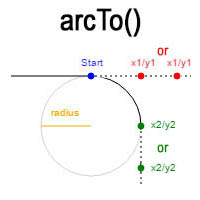
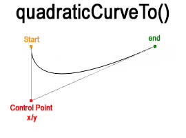
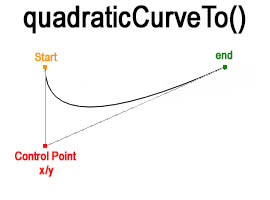

Updated ( 2018-11-05 / 2018-11-29 )
MySite> Canvas> Drawing Shapes
| Method / Property | Description |
|---|---|
| Rectangle | |
| canvasCtx2D.clearRect(x, y, width, height) | clears (makes transparent) the canvas on the set rectangle area |
| canvasCtx2D.fillRect(x, y, width, height) | draws a "filled" rectangle shape (stroke cannot be added) |
|
canvasCtx2D.rect(x, y, width, height) |
creates a rectangle |
| canvasCtx2D.strokeRect(x, y, width, height) | draws a "stroke" rectangle shape (fill cannot be added) |
| Paths | |
| var path2DObj = new Path2D() | returns a "path2D" object which is used create and store a path for later use, the fill() and stroke() methods take it as argument and draw it on the canvas |
| |
adds another "path2DObj" to the current "path2DObj" (merges them) (no IE / EDGE support!) |
|
canvasCtx2D.arc(x, y, radius, startAng(radian), endAng(radian), antiClockWhise_boolean) |
creates an arc/curve (has its own starting coordintes) |
| canvasCtx2D.arcTo(xCp, yCp, xDir, yDir, radius) |
creates an arc/curve between two tangent (first tangent extended if needed) |
| canvasCtx2D.beginPath() | resets the "sub-path" list (creates a new shape) |
|
canvasCtx2D.bezierCurveTo(x1Cp, y1Cp, x2Cp, y2Cp, xEnd, yEnd) |
creates a "cubic Bézier" curve between two points |
| canvasCtx2D.clip() | clips the current shape's region (all further drawings are limited to this region only) |
|
canvasCtx2D.closePath() |
closes the current path from the current point to the starting point (creates the last closing stroke of the path) |
|
canvasCtx2D.ellipse(x, y, xRadius, yRadius, rotation(radian), startAng(radian), endAng(radian), antiClockWhise_boolean) |
creates an ellipse (has its own starting coordintes) (no IE Support) |
| canvasCtx2D.fill(path2DObj, "nonzero/evenodd") | fills the current path (optionally the path from the path object), (optionally can fill every second sub-path nested shapes) |
| canvasCtx2D.isPointInPath(x, y) | returns a boolean value indicating if the given coordinates are in the current path |
|
canvasCtx2D.lineTo(x, y) |
creates a line from the last point to the specified point |
|
canvasCtx2D.moveTo(x, y) |
specifies a point without creating a line |
|
canvasCtx2D.quadraticCurveTo(xCp, yCp, xEnd, yEnd) |
creates a "quadratic Bézier" curve between two points (same as "cubic Bézier" curve but it has only 1 control point) |
| canvasCtx2D.stroke(path2DObj) | draws the current path (optionally the path from the path object) |
-
-
- unlike SVG, canvas supports only rectangle as primitive shape
SYNTAX : canvasCtx2D.rect(x, y, width, height) // creates a rectangle
canvasCtx2D.fillRect(x, y, width, height) // draws a "filled" rectangle shape (stroke cannot be added)
canvasCtx2D.strokeRect(x, y, width, height) // draws a "stroke" rectangle shape (fill cannot be added)
canvasCtx2D.clearRect(x, y, width, height) // clears (makes transparent) the canvas on the set rectangle area
- x / y : x and y starting point coordinates
<canvas id="myCanvas" style="border:solid 1px green;"></canvas>
<script>
var drawRect = function() {
var ctx = document.getElementById("myCanvas").getContext("2d");
ctx.strokeStyle = "blue"; // define the stroke and fill style
ctx.fillStyle = "white";
ctx.rect(10, 10, 50, 50); // create the rectangle
ctx.stroke(); // drawing the actual rectangle's stroke and fill
ctx.fill();
}
drawRect();
var drawRectShape = function() {
var ctx = document.getElementById("myCanvas").getContext("2d");
ctx.strokeRect(10, 10, 50, 50); // -! draws // a stroke rectangle (fill cannot be added)
ctx.fillRect(10, 100, 50, 50); // -! draws // a filled rectangle (stroke cannot be added)
ctx.clearRect(11, 111, 48, 48); // clears (makes transparent) the canvas on this area
}
drawRectShape();
</script>
<canvas id="simpleRect" style="border:solid 1px black"></canvas>
<script>
var simpleRectCanvas = function() {
var ctx = document.getElementById("simpleRect").getContext("2d");
ctx.rect(20, 20, 100, 75);
ctx.lineWidth = 10;
ctx.stroke();
}
simpleRectCanvas();
</script>
<canvas id="rectCanvas" style="border:solid 1px black"></canvas>
<script>
var drawSimpleRect = function() {
var ctx = document.getElementById("rectCanvas").getContext("2d");
// set the line widht, stroke and fill color
ctx.fillStyle = "white";
ctx.strokeStyle = "blue";
ctx.lineWidth = 5;
// drawing the acutal rectangles
ctx.fillRect(10, 10, 50, 50); // filled rectangle drawed
ctx.strokeRect(70, 70, 50, 50); // stroked rectange drawed
}
drawSimpleRect();
</script>
<canvas id="clearRectCanvas" style="border:solid 1px black"></canvas>
<script>
var clearRectCanvas = function() {
var ctx = document.getElementById("clearRectCanvas").getContext("2d");
ctx.fillStyle = "lightblue";
ctx.fillRect(20, 20, 100, 75);
ctx.stroke();
ctx.fillStyle = "orange";
ctx.fillRect(100, 60, 100, 75);
ctx.fillStyle = "green";
ctx.fillRect(180, 30, 100, 75);
ctx.clearRect(80, 70, 150, 20);
}
clearRectCanvas();
</script>
<canvas id="stroke_and_fill" style="border:solid 1px black"></canvas>
<script>
var ctxRect = document.getElementById("stroke_and_fill").getContext("2d");
var fillNo = function(c) {
c.strokeRect(20, 20, 100, 100);
c.fill(); // cannot fill the stroke rectange shape
}
fillNo(ctxRect);
var strokeNo = function(c) {
c.fillRect(140, 20, 100, 100);
c.stroke(); // cannot stroke the filled rectange shape
}
strokeNo(ctxRect);
</script>
- to create a shape we basically connect together a bunch of paths (lines, arcs, ect..), these are called "sub-paths"
- the beginShape() method resets this "sub-path" list everytime is called, this creates a new shape
SYNTAX : canvasCtx2D.beginPath() // resets the "sub-path" list (creates a new shape)
canvasCtx2D.closePath() // closes the current path from the current point to the starting point (creates the last closing stroke of the path)
canvasCtx2D.moveTo(x, y) // specifies a point without creating a line
canvasCtx2D.lineTo(x, y) // creates a line from the last point to the specified point
canvasCtx2D.arc(x, y, radius, startAng(radian), endAng(radian), antiClockWhise_boolean) // creates an arc/curve (has its own starting coordintes)
canvasCtx2D.ellipse(x, y, xRadius, yRadius, rotation(radian), startAng(radian), endAng(radian), antiClockWhise_boolean) // creates an ellipse (has its own starting coordintes) (no IE Support)
- startAng(radian) / endAng(radian) : start and ending angle expressed in radian
- xRadius / yRadius : this forms the ellipse
- rotation(radian) : rotation of the ellipse (direction clockwise)
canvasCtx2D.arcTo(xCp, yCp, xDir, yDir, radius) // creates an arc/curve between two tangent (first tangent extended if needed)
- xCp / yCp : control coordinates (imaginary point where the two tangent meet)
- xDir / yDir : direction coordinates (pointing direction of the angle)
canvasCtx2D.bezierCurveTo(x1Cp, y1Cp, x2Cp, y2Cp, xEnd, yEnd) // creates a "cubic Bézier" curve between two points
canvasCtx2D.quadraticCurveTo(xCp, yCp, xEnd, yEnd) // creates a "quadratic Bézier" curve between two points (same as "cubic Bézier" curve but it has only 1 control point)
- x1Cp / y1Cp / x2Cp / y2Cp / xCp/ yCp : control points
- xEnd / yEnd : ending coordinates
canvasCtx2D.clip() // clips the current shape's region (all further drawings are limited to this region only)
canvasCtx2D.isPointInPath(x, y) // returns a boolean value indicating if the given coordinates are in the current path
canvasCtx2D.stroke(path2DObj) // draws the current path (optionally the path from the path object)
canvasCtx2D.fill(path2DObj, "nonzero/evenodd") // fills the current path (optionally the path from the path object), (optionally can fill every second sub-pat nested shapes)
- path2DObj : path2D object which holds a 2D path
- "nonzero/evenodd" : (fill roules) "evenodd" fills every second sup-path shapes if they are nested! ("nonzero" default)
- the bezierCurveTo() and quadraticCurveTo() has definable ending points VS the arcTo() only points to the defined coordinates, this is because it creates a perfect arc
 

<canvas id="demo" style="border:solid 1px black"></canvas>
<script>
var myCanvas = function() {
var ctx = document.getElementById("demo").getContext("2d");
ctx.beginPath(); // this is not neccessary because at the start the the "sup-path" list is empty
<-ctx.moveTo(10, 10); // starging point set
sub- <-ctx.lineTo(40, 40); // creates a line from the last point
paht <-ctx.lineTo(40, 100);
list <- ctx.moveTo(40, 10); // point set without creating line from the last point (in the same path)
<-ctx.lineTo(70, 40);
<-ctx.lineTo(70, 100);
ctx.closePath(); // creates the closing line (stroke) from the current position to the starting position // -> not required but the shape will miss the closing stroke
ctx.stroke(); // drawing the actual shape
ctx.fill(); // filling the current shape
// clip() --------------
// ctx.clip(); // if this is declared all furhter drawings are limited to this area on the canvas only
// arc() ---------------
ctx.beginPath(); // reset the sub-path list
ctx.arc(150, 75, 50, 0, 2 * Math.PI); // creates a circle (circle has its own starting coordinates = no need for "moveTo()" method)
ctx.arc(150, 75, 25, 0.5, 2.5, true); // arc created (upper part because of antiClockWise creation direction specified)
ctx.stroke();
// ellipse() -----------
ctx.beginPath();
ctx.ellipse(150, 75, 25, 40, Math.PI * .25, 0, Math.PI * 2); // "25, 40" = forms the ellipse / "Math.PI * .25" rotation (rotated 45degrees clockwise)
ctx.stroke();
// arcTo() ------------- // because there is no "closePath()" method specified the arc is not closed
ctx.beginPath();
ctx.moveTo(0, 150);
ctx.arcTo(150, 0, 300, 150, 30); // "150, 0" = imaginary meeting point of the two tangents / "300, 150" poistion where the arc will point / "30" arc radius
ctx.lineTo(300, 150); // we create the line from the arc to the targeted position
ctx.stroke();
// bezierCurveTo() / quadraticCurveTo() -------------
ctx.beginPath();
ctx.moveTo(10, 10);
ctx.bezierCurveTo(70, 20, 70, 130, 10, 140); // "70, 20" = first control point / "70, 130" = second control point / "10, 140" line end coordinates
ctx.beginPath();
ctx.moveTo(10, 10);
ctx.quadraticCurveTo(70, 20, 10, 140); // "70, 20" = control point / "10, 140" line end coordinates (same as "bezierCurveTo()" method but it has only 1 control point)
}
myCanvas();
</script>
- fill rules
<canvas id="demo"></canvas>
<script>
var myCanvas = function() {
var ctx = document.getElementById("demo").getContext("2d");
// nested sub-path shapes (if they are not nested the fill roule has no effect!)
ctx.arc(150, 70, 10, 0, 2 * Math.PI); // not filled
ctx.arc(150, 70, 20, 0, 2 * Math.PI); // filled
ctx.arc(150, 70, 30, 0, 2 * Math.PI); // not filled
ctx.arc(150, 70, 40, 0, 2 * Math.PI); // filled
ctx.fill("evenodd"); // every second shapes are filled only! (in the sub-path list)
}
myCanvas();
</script>
<canvas id="beginCanvas" style="border:solid 1px black";></canvas>
<script>
var beginCanvas = function() {
var canvas = document.getElementById("beginCanvas");
var ctx = canvas.getContext("2d");
ctx.beginPath();
ctx.fillStyle = "blue";
ctx.strokeStyle = "white";
ctx.lineWidth = 6;
ctx.moveTo(75, 20); // we basically define where to start the path
ctx.lineTo(125, 130);
ctx.lineTo(25, 130); // defining the shape
ctx.stroke(); // drawing the actual path
ctx.fill();
// no "closePath()" method at the end of the shape = the last stroke is not drawn
ctx.beginPath(); // empties the list of sub paths (new path will be drawn) (does not reset context styling like lineWidth / strokeStyle / fillStyle)
ctx.moveTo(225, 20);
ctx.lineTo(275, 130);
ctx.lineTo(175, 130);
ctx.closePath();
ctx.fill();
ctx.stroke();
}
beginCanvas();
</script>
<canvas id="clipCanvas" style="border:solid 1px black"></canvas>
<script>
var clipRegion = function() {
var ctx = document.getElementById("clipCanvas").getContext("2d");
ctx.fillStyle = "red"; // this red rectangle is visible because it is drawn BEFORE the clipped region
ctx.fillRect(70, 0, 50, 50);
ctx.rect(10, 10, 100, 100);
ctx.stroke();
ctx.clip(); // all further drawings are limited to this (clipped) region
ctx.beginPath(); // this path is partially visible because of the clipped region
ctx.rect(60, 70, 100, 100);
ctx.fillStyle = "rgb(100, 255, 100)";
ctx.fill();
}
clipRegion();
</script>
<canvas id="pointCanvas" style="border:solid 1px black" height="70" width="200"></canvas>
<canvas id="pointCanvas2" style="border:solid 1px black" height="70" width="200"></canvas>
<script>
var pointInCanvas = function() {
var ctx = document.getElementById("pointCanvas").getContext("2d");
ctx.rect(10, 10, 40, 40);
ctx.stroke();
if(ctx.isPointInPath(20, 20)) { // this point is on the path
ctx.fillText("Point is on the path", 55, 40);
} else {
ctx.fillText("Point is NOT on the path", 55, 40);
}
}
pointInCanvas();
var pointInCanvas2 = function() {
var ctx = document.getElementById("pointCanvas2").getContext("2d");
ctx.rect(10, 10, 40, 40);
ctx.stroke();
if(ctx.isPointInPath(0, 0)) { // this point is NOT on the path
ctx.fillText("Point is on the path", 55, 40);
} else {
ctx.fillText("Point is NOT on the path", 55, 40);
}
}
pointInCanvas2();
</script>
<canvas id="arcCanvas" style="border:solid 1px black" width=150></canvas>
<script>
var arcCanvas = function() {
var ctx = document.getElementById("arcCanvas").getContext("2d");
ctx.arc(75, 75, 25, 0, 3.14); // half circle
ctx.closePath(); // closed path (to make smile :) )
ctx.stroke();
ctx.beginPath();
ctx.arc(75, 75, 35, 0, 2 * Math.PI); // full circle
ctx.stroke();
ctx.beginPath();
ctx.arc(75, 75, 45, 2, 4); // ear left
ctx.stroke();
ctx.beginPath();
ctx.arc(75, 75, 45, 1, -1, true); // antiClockWise ear right
ctx.stroke();
}
arcCanvas();
</script>
<canvas id="ellipseCanvas" style="border:solid 1px black"></canvas>
<script>
var ellipseDraw = function() {
var ctx = document.getElementById("ellipseCanvas").getContext("2d");
ctx.beginPath();
ctx.ellipse(50, 75, 25, 40, Math.PI * .25, 0, 6); // the rotation direction is in clockwise! (this is 45degrees)
ctx.stroke();
ctx.beginPath();
ctx.ellipse(250, 75, 15, 40, Math.PI * .75, 0, 6,); // this is 135degrees (rotaion direction clockwise)
ctx.stroke();
// I no full ellipse drawn because of the rotation direction illustration
// the last parameter controls only the drawing direction but NOT the rotation direction!
}
ellipseDraw();
</script>
- from the previous point you target the "imaginary" meeting point of the two tangents, these are the "control coordinates", the "target coordinates" define where the arc points
<canvas id="arcToCanvas" style="border:solid 1px black"></canvas>
<script>
var arcToCanvas = function() {
var ctx = document.getElementById("arcToCanvas").getContext("2d");
ctx.moveTo(20, 20);
ctx.arcTo(60, 20, 60, 60, 40);
ctx.stroke();
ctx.beginPath();
ctx.moveTo(0, 150);
ctx.arcTo(150, 0, 300, 150, 50); // the line is NOT drawn to till the second coordinates, those coordinates define where the angle should point, the radius set the size of this arc
ctx.stroke();
ctx.beginPath();
ctx.moveTo(290, 140);
ctx.lineTo(290, 50);
ctx.arcTo(290, 0, 270, 140, 2);
ctx.lineTo(270, 140);
ctx.stroke();
}
arcToCanvas();
</script>
<canvas id="triangle" style="border:solid 1px black;"></canvas>
<canvas id="zigZag" style="border:solid 1px black;"></canvas>
<canvas id="smallBreak" style="border:solid 1px black;"></canvas>
<script>
var triangle = function() {
var ctx = document.getElementById("triangle").getContext("2d");
ctx.moveTo(150, 140);
ctx.lineTo(250, 140);
ctx.arcTo(300, 140, 150, 0, 15); // the "arcTo()" method creates the previous tangent for us every time!
ctx.arcTo(150, 0, 0, 140, 15);
ctx.arcTo(0, 140, 300, 140, 15); // I gave a further closing coordinates "300, 140" / this does not matter it just gives where the closing edge should point!
ctx.strokeStyle = "blue";
ctx.lineWidth = 6;
ctx.closePath();
ctx.stroke();
}
triangle();
var zigZag = function() {
var ctx = document.getElementById("zigZag").getContext("2d");
ctx.moveTo(20, 20);
ctx.arcTo(20, 150, 60, 0, 5);
ctx.arcTo(60, 0, 100, 150, 5);
ctx.arcTo(100, 150, 140, 0, 5);
ctx.arcTo(140, 0, 180, 150, 5);
ctx.arcTo(180, 150, 220, 0, 5)
ctx.strokeStyle = "blue";
ctx.lineWidth = 6;
ctx.stroke();
}
zigZag();
var smallBreakAngle = function() {
var ctx = document.getElementById("smallBreak").getContext("2d");
ctx.strokeStyle = "blue";
ctx.lineWidth = 3;
ctx.moveTo(0, 20);
ctx.lineTo(50, 20)
ctx.arcTo(70, 0, 0, 150, 3); // control point is given higher so an extra tangent is created
ctx.lineTo(0, 150);
ctx.stroke();
}
smallBreakAngle();
</script>
<canvas id="arcTo_test3" style="border:solid 1px black;"></canvas>
<canvas id="arrow" style="border:solid 1px black;"></canvas>
<script>
var arcTo_T3 = function() {
var ctx = document.getElementById("arcTo_test3").getContext("2d");
ctx.strokeStyle = "blue";
ctx.lineWidth = 3;
ctx.moveTo(0, 0);
ctx.arcTo(300, 150, 0, 150, 5);
ctx.lineTo(0, 150);
ctx.stroke();
ctx.beginPath();
ctx.strokeStyle = "rgba(0, 255, 0, 0.5)";
ctx.lineWidth = 3;
ctx.moveTo(0, 0);
ctx.arcTo(300, 150, 0, 150, 30); // greater arc radious
ctx.lineTo(0, 150);
ctx.stroke();
}
arcTo_T3();
var arrow = function() {
var ctx = document.getElementById("arrow").getContext("2d");
ctx.moveTo(75, 75);
ctx.lineTo(225, 75);
ctx.lineTo(190, 70);
ctx.arcTo(225, 75, 190, 80, 7);
ctx.lineTo(225, 75);
ctx.stroke();
ctx.fill();
}
arrow();
</script>
- surprisingly the bezierCurveTo() and quadraticCurveTo() methods are easier to use than the artTo() method becasue you can define a target point where the line will end!
<canvas id="bezierTest" style="border:1px black solid"></canvas>
<script>
var bezierTest = function() {
ctx = document.getElementById("bezierTest").getContext("2d");
ctx.moveTo(10, 10);
ctx.bezierCurveTo(60, 20, 60, 130, 10, 140); // two control points are the same each side
ctx.stroke();
ctx.beginPath();
ctx.moveTo(290, 10);
ctx.quadraticCurveTo(240, 20, 290, 140); // the "quadraticCurveTo()" method has only 1 control point though!
ctx.stroke();
}
bezierTest();
</script>
1) - rectangles are nested fill roule set to "evenodd", reulting to fill every secont shape in the sub-pat
2) - not nested sub-path shapes = fill rule has no effect
3) - manualy created sub-path rectangles are neste = fill rule works!
<canvas id="fillRule" style="border:1px solid black;"></canvas>
<canvas id="fillRule2" style="border:1px solid black;"></canvas>
<canvas id="fillRule3" style="border:1px solid black;"></canvas>
<script>
var fillRule = function() {
var ctx = document.getElementById("fillRule").getContext("2d");
ctx.rect(10, 10, 280, 130);
ctx.rect(20, 20, 260, 110);
ctx.rect(30, 30, 240, 90);
ctx.rect(40, 40, 220, 70);
ctx.rect(50, 50, 200, 50);
ctx.fill("evenodd"); // every second rectangles are filled because they are nested!
}
fillRule();
var fillRuleLines = function() {
var ctx = document.getElementById("fillRule2").getContext("2d");
ctx.moveTo(10, 10);
ctx.lineTo(10, 140);
ctx.lineTo(20, 140);
ctx.lineTo(20, 10);
ctx.lineTo(10,10);
ctx.moveTo(30, 10);
ctx.lineTo(30, 140);
ctx.lineTo(40, 140);
ctx.lineTo(40, 10);
ctx.lineTo(30, 10);
ctx.moveTo(50, 10);
ctx.lineTo(50, 140);
ctx.lineTo(60, 140);
ctx.lineTo(60, 10);
ctx.lineTo(50, 10);
ctx.fill("evenodd"); // no effect because sub-pat shapes are not nested
}
fillRuleLines();
var fillRuleNoPresetShape = function() {
var ctx = document.getElementById("fillRule3").getContext("2d");
ctx.moveTo(10, 10);
ctx.lineTo(10, 140);
ctx.lineTo(290, 140);
ctx.lineTo(290, 10);
ctx.lineTo(10, 10);
ctx.moveTo(20, 20);
ctx.lineTo(20, 130);
ctx.lineTo(280, 130);
ctx.lineTo(280, 20);
ctx.lineTo(20, 20);
ctx.moveTo(30, 30);
ctx.lineTo(30, 120);
ctx.lineTo(270, 120);
ctx.lineTo(270, 30);
ctx.lineTo(30, 30);
ctx.fill("evenodd"); // ever second rectangle nested only
}
fillRuleNoPresetShape();
</script>
SYNTAX : var path2DObj = new Path2D() // returns a path2d object which is used create and store a path for later use, the fill() and stroke() methods take it as argument and draw it on the canvas
path2DObj.addPath(path2dObj, SVGMatrix) // adds another "path2dObj" to the current "path2dObj" (merges them) (no IE / EDGE support!)
- SVGMatrix : NOT TESTED
// -> these canvasCtx2D path creation methods what are available on the path2dObj too
path2DObj.closePath()
path2DObj.moveTo()
path2DObj.lineTo()
path2DObj.bezierCurveTo()
path2DObj.quadraticCurveTo()
path2DObj.arc()
path2DObj.ellipse()
path2DObj.rect()
<canvas id="demo" style="border:solid 1px black"></canvas>
<script>
var myCanvas = function() {
var ctx = document.getElementById("demo").getContext("2d");
var path = new Path2D(); // create a 2D path object
path.rect(20, 20, 260, 110); // create a path in the path object
var path2 = new Path2D(); // create second 2D path object
path2.moveTo(20, 20);
path2.lineTo(280, 130);
path.addPath(path2); // add the 2nd path object to the first one (so they make one path object)
ctx.stroke(path); // draw the path object on the canvas
}
myCanvas();
</script>
<canvas id="path2D_t1" style="border:1px solid black;"></canvas>
<script>
var path2D_test = function() {
var ctx = document.getElementById("path2D_t1").getContext("2d");
// path_1
var path1 = new Path2D(); // create a path object
path1.arc(75, 75, 60, 0, Math.PI * 2); // draw the path object
// path_2
var path2 = new Path2D();
path2.moveTo(150, 140);
path2.lineTo(200, 10);
path2.lineTo(250, 140);
path2.closePath();
ctx.stroke(path1); // use the stored path objects
ctx.stroke(path2);
}
path2D_test();
</script>
<canvas id="addPath_Test" style="border:1px solid black;"></canvas>
<script>
var addPath_it = function() {
var ctx = document.getElementById("addPath_Test").getContext("2d");
var mainPath = new Path2D(); // main path created
mainPath.rect(20, 20, 260, 110);
var path1 = new Path2D(); // path1 created
path1.arc(75, 75, 35, 0, Math.PI * 2);
var path2 = new Path2D(); // path2 created
path2.arc(225, 75, 35, 0, Math.PI * 2);
mainPath.addPath(path1); // path1 and path2 added to the main path
mainPath.addPath(path2);
ctx.stroke(mainPath); // draw the main path
}
addPath_it();
</script>